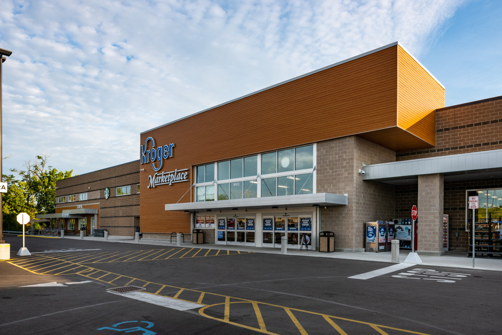

Job History
Kroger

Dent Kroger
Fun fact, the Dent Kroger on Harrison Avenue makes the second most sales out of all Kroger owned buisnesses in the country.
E-commerce Clerk
- Directed and guided team to perform several task
- Ensured customer satisfaction
- Gathered and loaded customers groceries
E-commerce Department Lead
- Leaded the pick-up departments operations
- Trained dozens of employees by providing insight
- Improved productivity through brainstorming, and creativity
Manager on Duty
- Acted as store manager
- Directed projects
- Managed 250+ employees
- Led and assisted the store manager
District E-commerce floating supervisor
- Travel to several stores across the city to provide insight and training
- Coordinate with the district manager daily to discuss plans and stratagies to meet goals
- Improve sales by improving labor efficiency